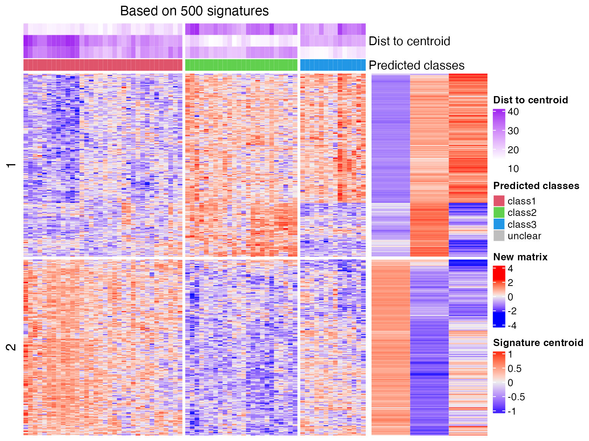
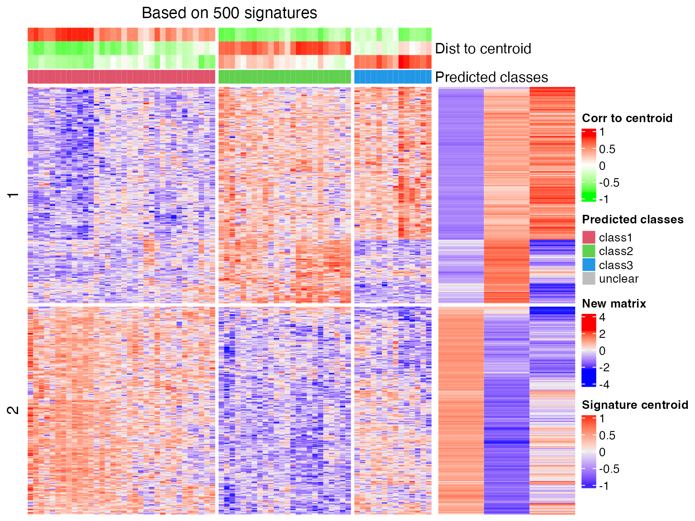

vignettes/predict.Rmd
predict.Rmdpredict_classes() function predicts sample classes based on cola classification. It is mainly used in the following two scenarios:
To use a cola classification, users need to select the result from a specific top-value method and partitioning method, i.e., the input should be a ConsensusPartition object. In the following example, we use the analysis from Golub dataset and we take the result from the method ATC:skmeans.
data(golub_cola) res = golub_cola["ATC:skmeans"] res
## A 'ConsensusPartition' object with k = 2, 3, 4, 5, 6.
## On a matrix with 4116 rows and 72 columns.
## Top rows (412, 824, 1235) are extracted by 'ATC' method.
## Subgroups are detected by 'skmeans' method.
## Performed in total 750 partitions by row resampling.
## Best k for subgroups seems to be 3.
##
## Following methods can be applied to this 'ConsensusPartition' object:
## [1] "cola_report" "collect_classes" "collect_plots"
## [4] "collect_stats" "colnames" "compare_signatures"
## [7] "consensus_heatmap" "dimension_reduction" "functional_enrichment"
## [10] "get_anno_col" "get_anno" "get_classes"
## [13] "get_consensus" "get_matrix" "get_membership"
## [16] "get_param" "get_signatures" "get_stats"
## [19] "is_best_k" "is_stable_k" "membership_heatmap"
## [22] "ncol" "nrow" "plot_ecdf"
## [25] "predict_classes" "rownames" "select_partition_number"
## [28] "show" "suggest_best_k" "test_to_known_factors"predict_classes() needs at least three arguments: a ConsensusPartition object, the number of subgroups and the new matrix. The first two are for extracting the classification as well as the signatures that best separate subgroups. The new matrix should have the same number of rows as the matrix used for cola analysis, also the row orders should be the same. Be careful that the scaling of the new matrix should also be the same as the one applied in cola analysis.
The prediction is based on the signature centroid matrix. The processes are as follows:
ConsensusPartition object and a selected k, the signatures that discriminate classes are extracted by get_signatures(). If number of signatures is more than 2000, only 2000 signatures are randomly sampled.silhouette_cutoff (0.5 as the default) are removed for calculating the centroids.The class prediction is applied as follows. For each sample in the new matrix, the task is basically to test which signature centroid the current sample is the closest to. There are three methods: the Euclidean distance, cosine distance (it is 1-cos(x, y)) and the correlation (Spearman) distance.
For the Euclidean distance and cosine distance method, for the vector denoted as \(x\) which corresponds to sample \(i\) in the new matrix, to test which class should be assigned to sample \(i\), the distance between sample \(i\) and all \(k\) signature centroids are calculated and denoted as \(d_1\), \(d_2\), …, \(d_k\). The class with the smallest distance is assigned to sample \(i\).
To test whether the class assignment is statistically significant, or to test whether the class that is assigned is significantly closest to sample \(i\), we design a statistic named “difference ratio”, denoted as \(r\) and calculated as follows. First, The distances for \(k\) centroids are sorted increasingly, and we calculate \(r\) as:
\[r = \frac{|d_{(1)} - d_{(2)}|}{\bar{d}}\]
which is the difference between the smallest distance and the second smallest distance, normalized by the mean distance. To test the statistical significance of \(r\), we randomly permute rows of the signature centroid matrix and calculate \(r_{rand}\). The random permutation is performed 1000 times and the p-value is calculated as the proportion of \(r_{rand}\) being larger than \(r\).
For the correlation method, the distance is calculated as the Spearman correlation between sample \(i\) and signature centroid \(k\). The label for the class with the maximal correlation value is assigned to sample \(i\). The p-value is simply calculated by stats::cor.test() between sample \(i\) and centroid \(k\).
If a sample is tested with a p-value higher than 0.05, the corresponding class label is set to NA.
To demonstrate the use of predict_classes(), we use the same matrix as for cola analysis.
mat = get_matrix(res)
Note the matrix was row-scaled in cola analysis, thus, mat should also be scaled with the same method (z-score scaling).
And we predict the class of mat2 with the 3-group classification from res.
cl = predict_classes(res, k = 3, mat2)
## The matrix has been scaled in cola analysis, thus the new matrix should also be scaled
## with the same method ('z-score'). Please double check.
## Set `help = FALSE` to suppress this message.
##
## * 70/72 samples (in 3 classes) remain after filtering by silhouette (>= 0.5).
## * cache hash: d7b0ab9e8457e94218da8307be387574 (seed 888).
## * calculating row difference between subgroups by Ftest.
## * split rows into 4 groups by k-means clustering.
## * 2076 signatures (50.4%) under fdr < 0.05, group_diff > 0.
## Predict classes based on 3-group classification (euclidean method) on a 72-column matrix.
cl## class p
## sample_39 3 0.000
## sample_40 3 0.000
## sample_42 1 0.000
## sample_47 1 0.000
## sample_48 1 0.000
## sample_49 3 0.000
## sample_41 1 0.000
## sample_43 1 0.000
## sample_44 1 0.000
## sample_45 1 0.000
## sample_46 1 0.000
## sample_70 1 0.000
## sample_71 1 0.000
## sample_72 1 0.000
## sample_68 1 0.000
## sample_69 1 0.000
## sample_67 1 0.000
## sample_55 3 0.000
## sample_56 3 0.000
## sample_59 1 0.000
## sample_52 2 0.000
## sample_53 2 0.000
## sample_51 2 0.000
## sample_50 2 0.000
## sample_54 1 0.000
## sample_57 2 0.000
## sample_58 2 0.000
## sample_60 2 0.070
## sample_61 2 0.000
## sample_65 2 0.000
## sample_66 1 0.000
## sample_63 2 0.000
## sample_64 2 0.000
## sample_62 2 0.000
## sample_1 3 0.000
## sample_2 1 0.000
## sample_3 3 0.000
## sample_4 3 0.000
## sample_5 1 0.000
## sample_6 3 0.000
## sample_7 3 0.000
## sample_8 3 0.000
## sample_9 1 0.000
## sample_10 3 0.000
## sample_11 1 0.000
## sample_12 2 0.000
## sample_13 1 0.000
## sample_14 1 0.000
## sample_15 1 0.000
## sample_16 1 0.000
## sample_17 1 0.000
## sample_18 3 0.000
## sample_19 1 0.000
## sample_20 1 0.000
## sample_21 1 0.000
## sample_22 2 0.037
## sample_23 3 0.000
## sample_24 1 0.000
## sample_25 2 0.834
## sample_26 1 0.006
## sample_27 3 0.000
## sample_34 2 0.000
## sample_35 2 0.000
## sample_36 2 0.000
## sample_37 2 0.000
## sample_38 2 0.000
## sample_28 2 0.000
## sample_29 1 0.000
## sample_30 2 0.000
## sample_31 2 0.000
## sample_32 2 0.000
## sample_33 2 0.000We compare to the original classification:
data.frame(cola_class = get_classes(res, k = 3)[, "class"], predicted = cl[, "class"])
## cola_class predicted
## 1 3 3
## 2 3 3
## 3 1 1
## 4 1 1
## 5 1 1
## 6 3 3
## 7 1 1
## 8 1 1
## 9 1 1
## 10 1 1
## 11 1 1
## 12 1 1
## 13 1 1
## 14 1 1
## 15 1 1
## 16 1 1
## 17 1 1
## 18 3 3
## 19 3 3
## 20 1 1
## 21 2 2
## 22 2 2
## 23 2 2
## 24 2 2
## 25 1 1
## 26 2 2
## 27 2 2
## 28 2 2
## 29 2 2
## 30 2 2
## 31 1 1
## 32 2 2
## 33 2 2
## 34 2 2
## 35 3 3
## 36 1 1
## 37 3 3
## 38 3 3
## 39 1 1
## 40 3 3
## 41 3 3
## 42 3 3
## 43 1 1
## 44 3 3
## 45 1 1
## 46 2 2
## 47 1 1
## 48 1 1
## 49 1 1
## 50 1 1
## 51 1 1
## 52 3 3
## 53 1 1
## 54 1 1
## 55 1 1
## 56 2 2
## 57 3 3
## 58 1 1
## 59 3 2
## 60 1 1
## 61 3 3
## 62 2 2
## 63 2 2
## 64 2 2
## 65 2 2
## 66 2 2
## 67 2 2
## 68 1 1
## 69 2 2
## 70 2 2
## 71 2 2
## 72 2 2predict_classes() generates a plot which shows the process of the prediction. The left heatmap corresponds to the new matrix and the right small heatmap corresponds to the signature centroid matrix. The purple annotation on top of the first heatmap illustrates the distance of each sample to the k signatures.
And if we change to correlation method:
cl = predict_classes(res, k = 3, mat2, dist_method = "correlation")
## The matrix has been scaled in cola analysis, thus the new matrix should also be scaled
## with the same method ('z-score'). Please double check.
## Set `help = FALSE` to suppress this message.
##
## * 70/72 samples (in 3 classes) remain after filtering by silhouette (>= 0.5).
## * cache hash: d7b0ab9e8457e94218da8307be387574 (seed 888).
## * calculating row difference between subgroups by Ftest.
## - row difference is extracted from cache.
## * use k-means partition that are already calculated in previous runs.
## * 2076 signatures (50.4%) under fdr < 0.05, group_diff > 0.
## Predict classes based on 3-group classification (correlation method) on a 72-column matrix.
cl## class p
## sample_39 3 1.879136e-72
## sample_40 3 9.818580e-50
## sample_42 1 4.726915e-28
## sample_47 1 4.368519e-52
## sample_48 1 9.595020e-164
## sample_49 3 8.966020e-145
## sample_41 1 1.355841e-155
## sample_43 1 2.124976e-28
## sample_44 1 1.129990e-63
## sample_45 1 2.862219e-43
## sample_46 1 1.463918e-39
## sample_70 1 9.555535e-09
## sample_71 1 1.883125e-08
## sample_72 1 1.890317e-21
## sample_68 1 7.434706e-169
## sample_69 1 8.727398e-164
## sample_67 1 2.342032e-26
## sample_55 3 1.167792e-50
## sample_56 3 2.129338e-84
## sample_59 1 8.745044e-09
## sample_52 2 4.990070e-35
## sample_53 2 2.225819e-79
## sample_51 2 3.855936e-128
## sample_50 2 2.690689e-133
## sample_54 1 2.396841e-06
## sample_57 2 9.747602e-38
## sample_58 2 8.959459e-91
## sample_60 2 3.846989e-04
## sample_61 2 6.257010e-47
## sample_65 2 6.262522e-59
## sample_66 1 1.996473e-58
## sample_63 2 4.024436e-66
## sample_64 2 3.250437e-59
## sample_62 2 6.065638e-47
## sample_1 3 1.265338e-45
## sample_2 1 1.177492e-23
## sample_3 3 1.683713e-65
## sample_4 3 1.531594e-54
## sample_5 1 6.191909e-170
## sample_6 3 4.257850e-73
## sample_7 3 7.828966e-99
## sample_8 3 4.445058e-97
## sample_9 1 4.291423e-26
## sample_10 3 1.040207e-13
## sample_11 1 1.188730e-33
## sample_12 2 6.107449e-21
## sample_13 1 3.186049e-177
## sample_14 1 4.878387e-33
## sample_15 1 2.349793e-198
## sample_16 1 1.502211e-36
## sample_17 1 1.656820e-16
## sample_18 3 2.807438e-17
## sample_19 1 9.592796e-40
## sample_20 1 2.289534e-176
## sample_21 1 1.806297e-81
## sample_22 2 3.539478e-18
## sample_23 3 4.171210e-76
## sample_24 1 2.445660e-76
## sample_25 2 1.157628e-01
## sample_26 1 1.750686e-07
## sample_27 3 1.362532e-135
## sample_34 2 4.331738e-101
## sample_35 2 6.367166e-78
## sample_36 2 8.758828e-114
## sample_37 2 6.245463e-98
## sample_38 2 5.815944e-57
## sample_28 2 1.616753e-51
## sample_29 1 2.970516e-19
## sample_30 2 2.921410e-53
## sample_31 2 1.693478e-77
## sample_32 2 3.601003e-67
## sample_33 2 5.194996e-163As we can see from the above two heatmaps, correlation method is less strict than the Euclidean method that the two samples that cannot be assigned to any class with Euclidean method are assigned with certain classes under correlation method.
predict_classes() can also be directly applied to a signature centroid matrix. Following is how we manually generate the signature centroid matrix for 3-group classification from Golub dataset:
tb = get_signatures(res, k = 3, plot = FALSE)
## * 70/72 samples (in 3 classes) remain after filtering by silhouette (>= 0.5).
## * cache hash: d7b0ab9e8457e94218da8307be387574 (seed 888).
## * calculating row difference between subgroups by Ftest.
## - row difference is extracted from cache.
## * use k-means partition that are already calculated in previous runs.
## * 2076 signatures (50.4%) under fdr < 0.05, group_diff > 0.# the centroids are already in `tb`, both scaled and unscaled, we just simply extract it sig_mat = tb[, grepl("scaled_mean", colnames(tb))] sig_mat = as.matrix(sig_mat) colnames(sig_mat) = paste0("class", seq_len(ncol(sig_mat))) head(sig_mat)
## class1 class2 class3
## [1,] -0.5519215 0.52395127 0.3740407
## [2,] -0.4025209 0.06789322 0.7546084
## [3,] -0.3077090 0.58853214 -0.2459700
## [4,] -0.1548451 0.47963596 -0.4051056
## [5,] -0.2048139 -0.15871813 0.6803041
## [6,] -0.3427458 0.40763038 0.1061578And sig_mat can be used in predict_classes():
cl = predict_classes(sig_mat, mat2) cl = predict_classes(sig_mat, mat2, dist_method = "correlation")
## R version 4.0.2 (2020-06-22)
## Platform: x86_64-apple-darwin17.0 (64-bit)
## Running under: macOS Catalina 10.15.5
##
## Matrix products: default
## BLAS: /Library/Frameworks/R.framework/Versions/4.0/Resources/lib/libRblas.dylib
## LAPACK: /Library/Frameworks/R.framework/Versions/4.0/Resources/lib/libRlapack.dylib
##
## locale:
## [1] en_GB.UTF-8/en_GB.UTF-8/en_GB.UTF-8/C/en_GB.UTF-8/en_GB.UTF-8
##
## attached base packages:
## [1] stats graphics grDevices utils datasets methods base
##
## other attached packages:
## [1] cola_1.5.6 knitr_1.29 markdown_1.1
##
## loaded via a namespace (and not attached):
## [1] mclust_5.4.6 Rcpp_1.0.5 lattice_0.20-41 circlize_0.4.11
## [5] png_0.1-7 assertthat_0.2.1 rprojroot_1.3-2 digest_0.6.25
## [9] slam_0.1-47 R6_2.4.1 backports_1.1.9 stats4_4.0.2
## [13] RSQLite_2.2.0 evaluate_0.14 httr_1.4.2 GlobalOptions_0.1.2
## [17] rlang_0.4.7 annotate_1.66.0 blob_1.2.1 magick_2.4.0
## [21] S4Vectors_0.26.1 GetoptLong_1.0.3 Matrix_1.2-18 rmarkdown_2.3
## [25] pkgdown_1.5.1 desc_1.2.0 splines_4.0.2 stringr_1.4.0
## [29] RCurl_1.98-1.2 bit_4.0.4 compiler_4.0.2 eulerr_6.1.0
## [33] xfun_0.16 microbenchmark_1.4-7 BiocGenerics_0.34.0 shape_1.4.4
## [37] htmltools_0.5.0 IRanges_2.22.2 matrixStats_0.56.0 XML_3.99-0.5
## [41] crayon_1.3.4 MASS_7.3-52 bitops_1.0-6 grid_4.0.2
## [45] xtable_1.8-4 DBI_1.1.0 magrittr_1.5 skmeans_0.2-12
## [49] stringi_1.4.6 impute_1.62.0 genefilter_1.70.0 fs_1.5.0
## [53] xml2_1.3.2 brew_1.0-6 vctrs_0.3.4 rjson_0.2.20
## [57] RColorBrewer_1.1-2 tools_4.0.2 bit64_4.0.5 Biobase_2.48.0
## [61] parallel_4.0.2 survival_3.2-3 yaml_2.2.1 clue_0.3-57
## [65] AnnotationDbi_1.50.3 colorspace_1.4-1 cluster_2.1.0 ComplexHeatmap_2.5.5
## [69] memoise_1.1.0